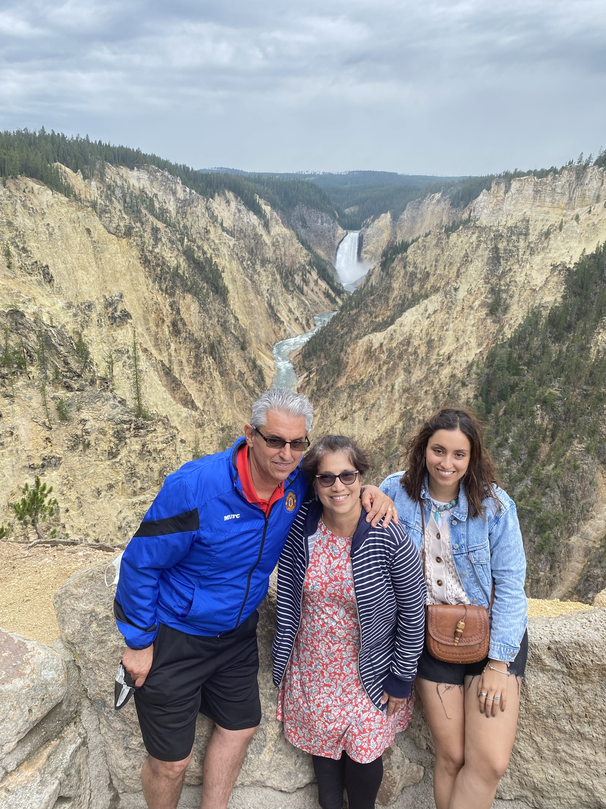

My name is Luisa Jaime, and I was born and raised in Guadalajara, Mexico. I decided to pursue a master's in data science because I wanted to transition into a field that moves away from traditional lab work while still being closely related to science. I believe that data science offers a unique opportunity to integrate my undergraduate knowledge with cutting-edge analytical techniques, allowing me to contribute to impactful scientific discoveries in new and innovative ways.
